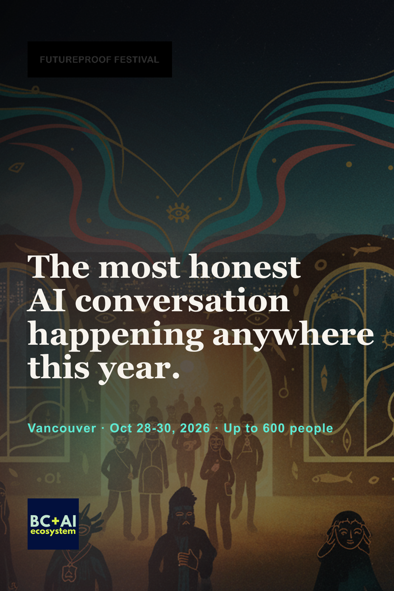

On July 29, I stood onstage at Vancouver AI Meetup #31 in front of a room that had no business being full on a Wednesday night. It was full anyway.
Behind me, salmon, ravens, northern lights, and seven words in very large type: VANCOUVER, WE NEED TO TALK ABOUT AI. In front of me, the crew that has kept showing up month after month to do exactly that. Michael Caswell caught the frame. I am mid-sentence, pointing at something I clearly believe.
That night was not a metaphor for Futureproof. It was a rehearsal. The room already exists. I am asking it to get bigger for three days in October.
The full recording starts the Futureproof part at 19:04. The photo gallery shows what the camera onstage cannot: the people, the side conversations, and the room doing its real work.
I told the origin story, including the FATALE name and the long road here, in The Long Road to Futureproof. This is the next chapter. It is about the rooms that taught me what to build, the Vancouver community already proving the model, and who I want beside us when the doors open.
Three decades on the internet. This is my bat signal.
Vancouver AI began in January 2024 as a monthly gathering in my studio. Eighty people squeezed into the first one. By July 2026 we were at meetup thirty-one, filling the Space Centre and producing an archive of talks, transcripts, photographs, demos, arguments, and very strange hallway conversations.
The deeper story is in Zero to One: From Meetup to Movement. The short version is that the meetup grew a spine. BC + AI gave the work a nonprofit home, regional relationships, member programs, weekly office hours, film nights, hackathons, education work, and hundreds of people willing to keep showing up. Thousands of seats have been filled since the first gathering. The exact count matters less than the repetition: this is not one lucky sold-out night.

The community has been practising what Futureproof needs: ceremony before slides, relationships before transactions, artists beside engineers, skeptics beside builders, and enough trust to disagree without turning the room into a blood sport.
Futureproof did not arrive from a branding workshop. It grew out of those monthly rooms. BC + AI's companion story carries the regional invitation. This essay carries mine.
I do not love the third-person conference-bio voice, all polished credentials and suspiciously shiny adjectives. Someone once called me an international badass man of mystery. Cute. What I actually did was keep showing up with a camera until rooms started trusting me with more than the photographs.
Before the AI conversation swallowed the calendar, there were other rooms:


Those screenshots are not decoration. They are public receipts. Links rot, bios inflate, and memory gets heroic when nobody checks it. I want this festival built on the opposite habit: name the people, show the source, keep the record.
The room is the product. Stages, swag, and sponsor walls are furniture. The actual product is whether someone can walk in alone, find a conversation worth joining, and leave with a relationship that survives the closing slide.
Hallways carry half the program. The talk gives people a shared object. The five minutes afterward, when two strangers compare notes beside a badly placed coffee urn, is where the object becomes useful.
Art and disagreement belong beside the technology. They are not garnish for the reception. Too many AI events I have attended put product demos at the centre and invite culture in later to make the program look human. Futureproof starts with the humans already in the room.
Audiences are participants. A good gathering gives people jobs to do: ask the sharper question, show the unfinished thing, challenge the premise, introduce two people, document what happened, or make the next room possible.

That is why Futureproof brings talks, film, creative work, demos, live performance, and room for conversations that are not onstage. The format should create useful collisions without manufacturing them. If every minute is programmed, nobody has time to become part of the story.
Futureproof Festival of AI is an international AI culture and ideas festival in Vancouver, October 28 to 30, 2026. Opening night leads into two full program days at the H.R. MacMillan Space Centre, with the film festival closing party carrying us out the other side.
The editorial line is simple: critique in one hand, curiosity in the other. No hype. No panic. We need a place where an artist can question the training data, a founder can show a working tool, an educator can talk about what is happening in classrooms, an Indigenous leader can challenge the assumptions underneath the system, and a skeptic can stay in the room long enough to hear something unexpected.
The public speaker roster is already bringing together people from archives, design, healthcare, film, research, public-interest work, startups, and community building. Kevin Friel is carrying the BC + AI Film Club thread into the festival. More of the program will become public as it is ready. I would rather publish a real name late than a fantasy schedule early.

Vancouver matters here. This city knows how to build strange combinations: technology and land, cinema and software, activism and design, ceremony and experimentation. It also knows how to sell itself a little too easily. Futureproof should be honest about both. The official venue page shows the Space Centre as it actually works, full of people, not as an empty rental brochure.

If you stacked chairs with me at Northern Voice, worked beside us during the Olympics, or crossed paths in Camden, Doha, Austin, or Sun Valley, this is the call.
If you have sat in a Vancouver AI meetup, taught a workshop, opened with ceremony, screened a film, built a prototype, challenged me in a hallway, photographed the room, or helped clean it after everyone left, this is also the call.
If we have never met but you are trying to build technology without surrendering culture, judgment, consent, or joy, there is a chair for you too.
Come make the room bigger. Bring your better questions, and bring the people who ask them.
I am not inviting you to a product launch with better lighting. I am asking you to help hold a room that can stay honest without collapsing into boosterism or doom. Speakers, builders, artists, photographers, organizers, educators, policymakers, researchers, founders, skeptics, students, and the gloriously unclassifiable people every useful conference collects by accident.
Choose the door that fits:
The Earlyworm ticket window currently runs through August 15, 2026. After that, the official ticket and Luma pages remain the source of truth. Prices and deadlines move. The invitation does not.

This is the first Futureproof Festival. It is not the first room.
Three decades on the internet, most of them spent photographing gatherings like this, and the guest list is everyone who ever let me stand in theirs.